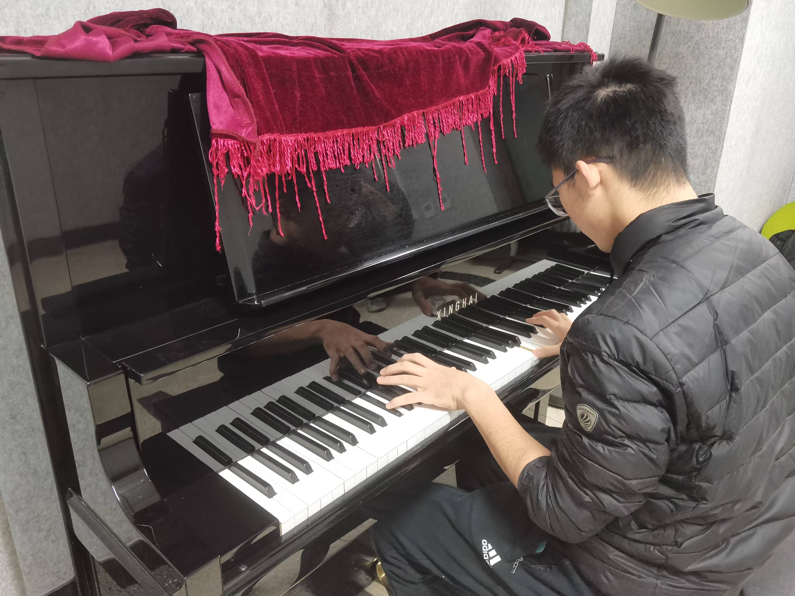

Welcome to my page! |
|
| Intro " " Math&Phys " " Music " " Dialects " " Travel | |
|  |
Name: Yifan Yao 姚一凡
|
Research interest:
My current interest lies in the mathematical physics, such as Gromov-Witten theory, mirror symmetry and deformation quantization. By the by, I'm a fan of Maxim Kontsevich!
|
|